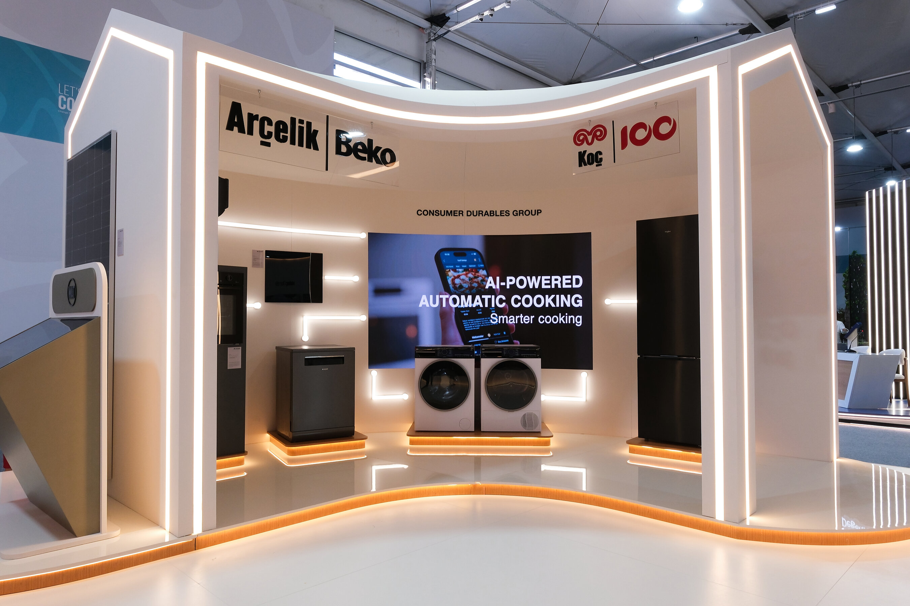

厨房智能硬件 · 联网与用能
Beko展出联网厨电，让用能管理走进厨房
从看见能耗，到按电价安排洗碗，厨电联网有了更具体的日常任务。

11月9日，Beko在土耳其安塔利亚COP31展区开放展台，集中展示热泵洗碗机、感应灶与联网烤箱。公司介绍，HomeWhiz可查看部分设备的能源、水资源使用情况；灶具配有防干烧传感器，烤箱则以AI摄像头识别食物、跟踪烹饪并调整结束时点。
现场还展示FlexiStart：根据电价信息推荐较低成本的运行时段，经用户确认后安排洗碗机等设备工作。该功能已于11月6日公布，计划2027年1月上线，能源供应商接入先从德国、土耳其开始。此次展出不等于全部功能已在各市场可用，错峰省电费也不等于耗电量同比例减少。
Beko 官方新闻稿／PR Newswire · 2026-11-09 07:02 ET（北京时间20:02）Beko FlexiStart 首次公告 · 2026-11-06 05:39 ET事件：11月9日展台开放；FlexiStart为11月6日已公布、待上线功能。